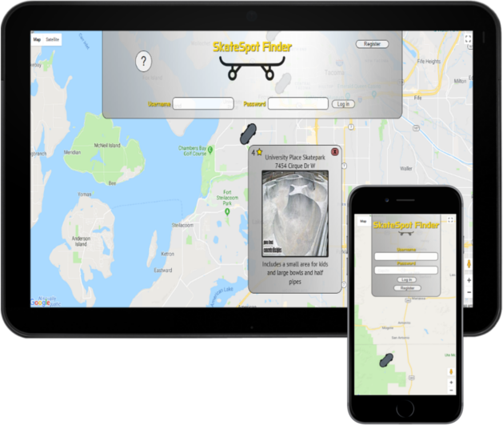
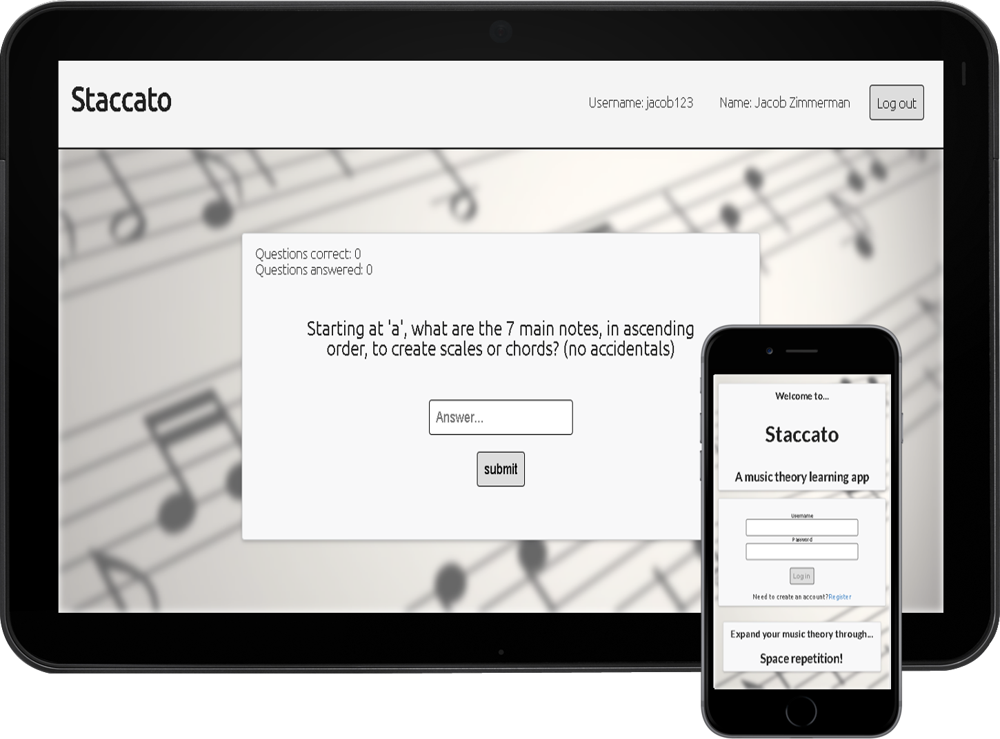

I'm a full stack developer living in Seattle. When I'm not coding away indoors, you'll find me enjoying the great hikes Washington has to offer.
I have always had an interest in STEM and I strive to leverage it to improve the quality of our everyday lives. I chose specifically to get into software as it is the best platform to transpile ideas into reality. Plus I'm a bit of a math geek and software lets me use and vizualize all the formulas I know and love!
Skatespot Finder allows skateboarders to find and add their favorite places to skateboard. I created the app because I wanted a place to keep all my current and prospective skateboarding spots.
MongoDB | Express | React | Node | JWT | React-Google-Maps
 Live AppStaccato lets users learn and memorize music theory concepts using a spaced repetition algorithm. The reason behind making this app was that learning music theory is hard and requires a lot of memorization at first, so my partner and I created this to help new learners with some of the basics.
I worked on the actions and store on the frontend as well as authentication and routes on the backend along with creating the algorithm.
MongoDB | Express | React | Node | JWT
 Live AppSkatespot Finder allows skateboarders to find and add their favorite places to skateboard. I created the app because I wanted a place to keep all my current and prospective skateboarding spots.
MongoDB | Express | React | Node | JWT | React-Google-Maps
Live AppStaccato lets users learn and memorize music theory concepts using a spaced repetition algorithm. The reason behind making this app was that learning music theory is hard and requires a lot of memorization at first, so my partner and I created this to help new learners with some of the basics. I worked on the actions and store on the frontend as well as authentication and routes on the backend along with creating the algorithm.
MongoDB | Express | React | Node | JWT
Live AppI have experience creating full stack applications from the ground up, if you're looking for help then I'm your man.
Drop me a line at jacobzimmerman80@gmail.com and I will keep in touch!